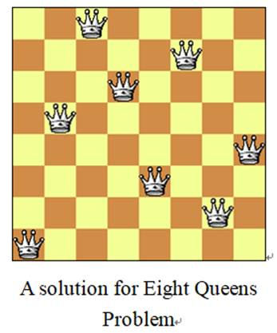
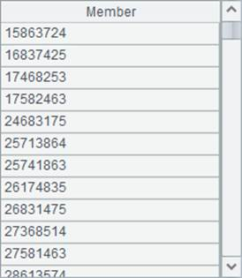

8. Eight Queens Puzzle

l problem
The Eight Queens problem is an old and famous problem. It is described as follows: Put eight queens on the 8X8 chessboard so that they do not attack each other, i.e. any two queens must not be in the same row, the same column, or the same diagonal. How many possible ways are there?
l Tip
1. Consider each row in the 8X8 chessboard as a sequence, and assign numbers 1, 2, 3, 4, 5, 6, 7, 8 to each cell in the column in order. 1. Firstly put the first queen in the first row and first column, and mark it in the sequence.
2. Go to the next row. If a queen already exists in the first column, move it to the next column along this row. If it already reaches the last column, return to the previous row to move the queen in that row to the next column.
3. Evaluate whether the queen in current row is in the same diagonal with the queens in all rows above. If they are in the same diagonal, move the queen in current row to the next column. If it already reaches the last column, return to the previous row and move the queen in that row to the next column.
l Code
|
|
A |
B |
C |
D |
|
|
1 |
=[0]*8 |
>i=1 |
|
|
A1 stores the place of queen in each row on the chessboard, and B1 initializes the starting row. |
|
2 |
for i>0 |
>A1(i)=A1(i)+1 |
|
|
B2 sets the place of queen in Row i, and evaluates whether it is reasonable starting from 1 place by place. |
|
3 |
if A1(i)==9 |
>A1(i)=0,i=i-1 |
next |
If it is not reasonable until the queen in current row reaches the last column, remove the queen in this row and return back to the previous row, and adjust the place of queen in previous row. |
|
|
4 |
if i==1 |
>i=2 |
next |
Evaluating for the first row is not required; just go to the next row for evaluation. |
|
|
5 |
|
=A1(i) |
=A1(to(i-1)) |
|
|
|
6 |
|
if C5.pos(B5)>0 |
next |
|
If a queen already exists in the column that the queen in current row locates, move the queen in current row to the next column for reevaluation. |
|
7 |
|
if C5.pselect(i-# ==abs(B5-~))>0 |
next |
|
If a queen already exists in the oblique line that the queen in current row locates, move the queen in current row to the next column for reevaluation. |
|
8 |
|
>i=i+1 |
|
|
Go to the next row if the queen in this row meets the requirement. |
|
9 |
|
if i==9 |
=C9|A1.concat() |
>i=i-1 |
Save the result if eight rows are set completely. Go into the next loop by modifying the result of previous row to find out another placement of queens. |
|
10 |
=C9.len() |
|
|
|
Count the number of all possibilities to put the queens. |
l Result

